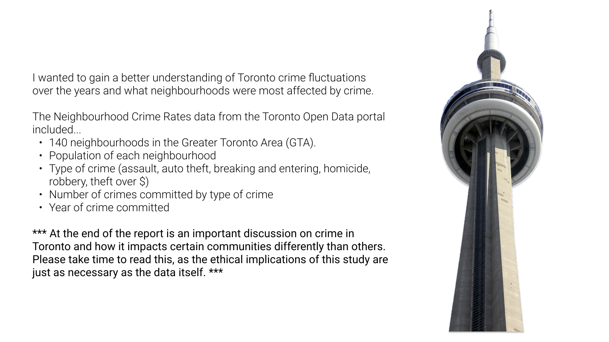
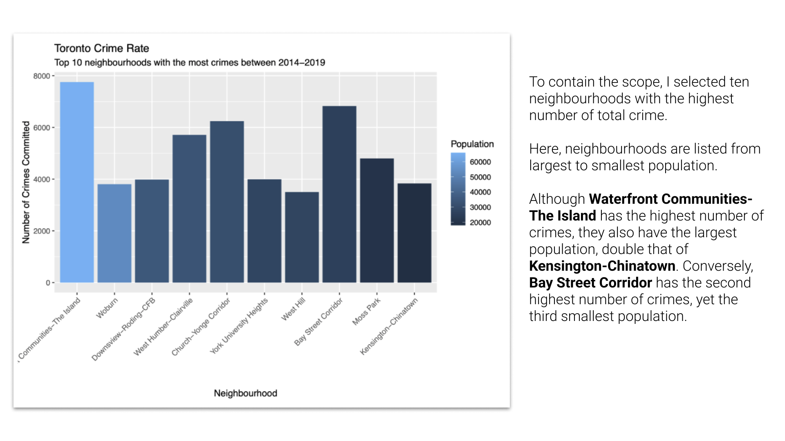
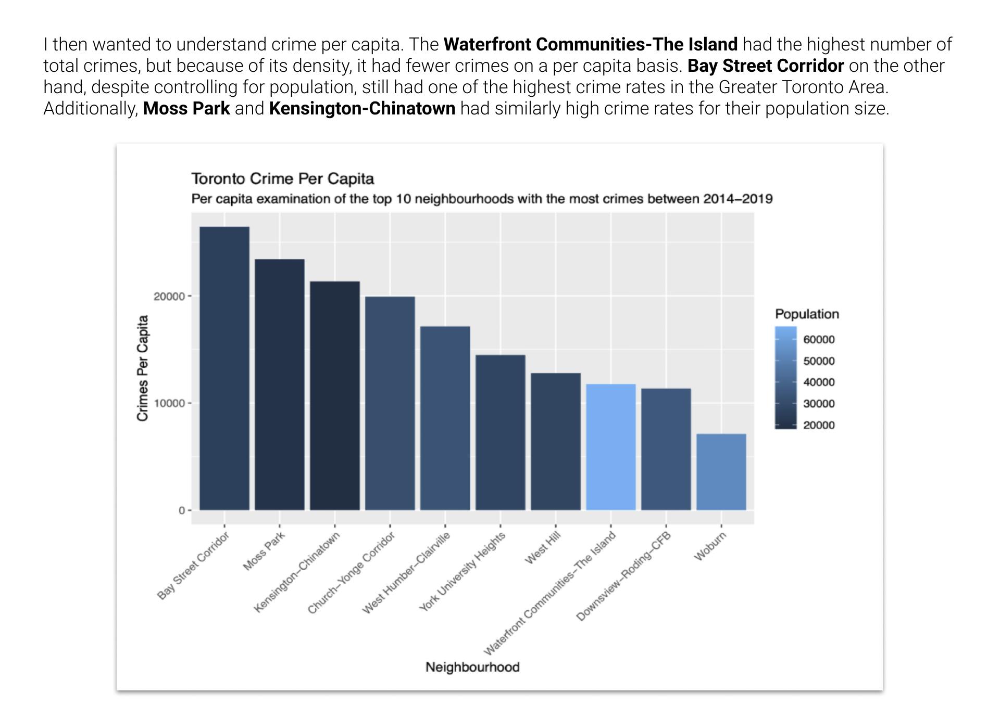
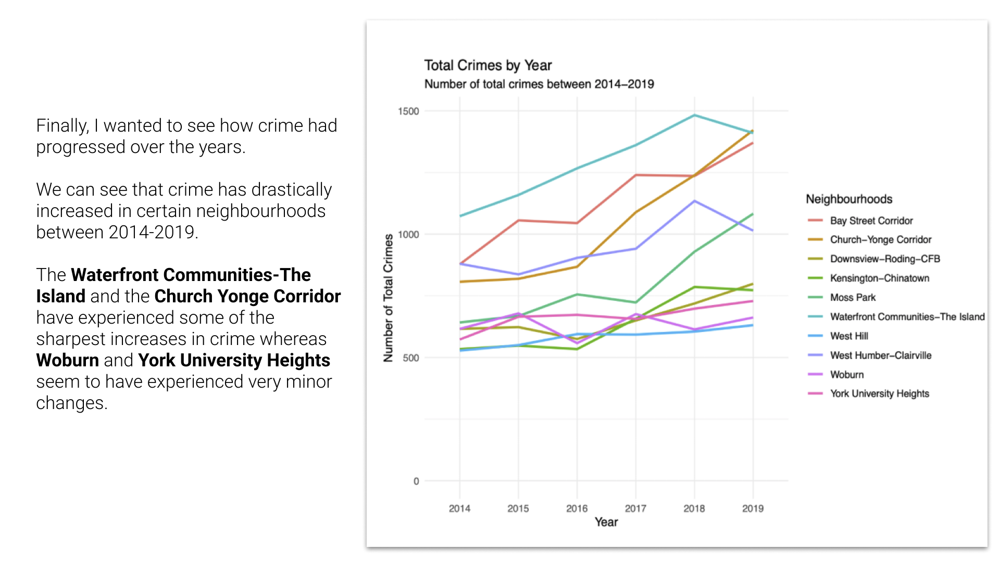
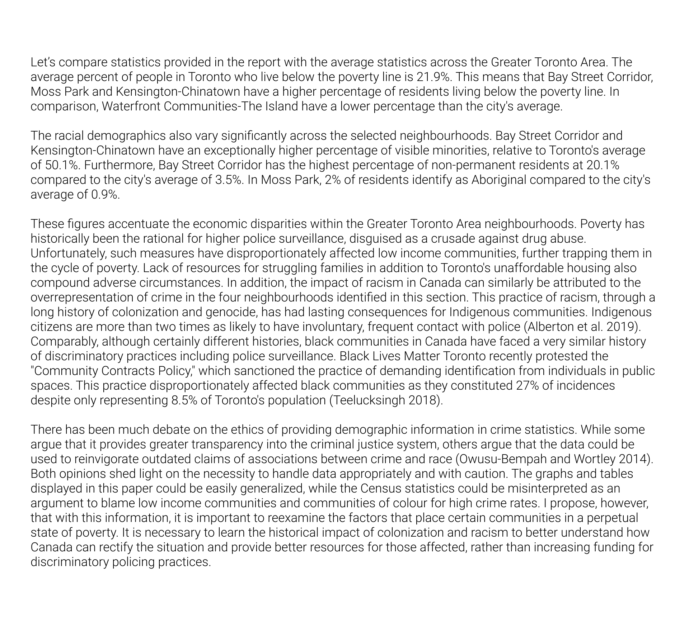

Toronto Crime Analysis
From the City of Toronto's open data portal, I pulled the Neighbourhood Crime Rates data to analyze the rate of crime in each neighbourhood. Although crime rates have risen between 2014-2019, certain neighbourhoods experience higher crime rates in the Greater Toronto Area. Further literature reviews of neighbourhoods who experience higher crime rates are also found to be economically disadvantaged communities. This data, without a further analysis and understanding of socioeconomic circumstances, could lead to higher police surveillance and further punitive action towards marginalized communities. Below are links to my Github repo, as well as a PDF version of the paper. I also added images of the graphs as well as my comparison discussion.
Github Link
PDF Link
Graphs:





4.2 Comparison
Although there are many statistics to digest, it is first necessary to compare these statistics with the average statistics across the Greater Toronto Area. The average percent of people in Toronto who live below the poverty line is 21.9%. This means that Bay Street Corridor, Moss Park and Kensington-Chinatown have a higher percentage of residents living below the poverty line. In comparison, Waterfront Communities-The Island have a lower percentage than the city’s average.
The racial demographics also vary significantly across the selected neighbourhoods. Bay Street Corridor and Kensington-Chinatown have an exceptionally higher percentage of visible minorities, relative to Toronto’s average of 50.1%. Furthermore, Bay Street Corridor has the highest percentage of non-permanent residents at 20.1% compared to the city’s average of 3.5%. In Moss Park, 2% of residents identify as Aboriginal compared to the city’s average of 0.9%.
These figures accentuate the economic disparities within the Greater Toronto Area neighbourhoods. Poverty has historically been the rational for higher police surveillance, disguised as a crusade against drug abuse. Unfortunately, such measures have disproportionately affected low income communities, further trapping them in the cycle of poverty. Lack of resources for struggling families in addition to Toronto’s unaffordable housing also compound adverse circumstances. In addition, the impact of racism in Canada can similarly be attributed to the overrepresentation of crime in the four neighbourhoods identified in this section. This practice of racism, through a long history of colonization and genocide, has had lasting consequences for Indigenous communities. Indigenous citizens are more than two times as likely to have involuntary, frequent contact with police (Alberton et al. 2019). Comparably, although certainly different histories, black commu- nities in Canada have faced a very similar history of discriminatory practices including police surveillance. Black Lives Matter Toronto recently protested the “Community Contracts Policy,” which sanctioned the practice of demanding identification from individuals in public spaces. This practice disproportionately af- fected black communities as they constituted 27% of incidences despite only representing 8.5% of Toronto’s population (Teelucksingh 2018).
The racial demographics also vary significantly across the selected neighbourhoods. Bay Street Corridor and Kensington-Chinatown have an exceptionally higher percentage of visible minorities, relative to Toronto’s average of 50.1%. Furthermore, Bay Street Corridor has the highest percentage of non-permanent residents at 20.1% compared to the city’s average of 3.5%. In Moss Park, 2% of residents identify as Aboriginal compared to the city’s average of 0.9%.
These figures accentuate the economic disparities within the Greater Toronto Area neighbourhoods. Poverty has historically been the rational for higher police surveillance, disguised as a crusade against drug abuse. Unfortunately, such measures have disproportionately affected low income communities, further trapping them in the cycle of poverty. Lack of resources for struggling families in addition to Toronto’s unaffordable housing also compound adverse circumstances. In addition, the impact of racism in Canada can similarly be attributed to the overrepresentation of crime in the four neighbourhoods identified in this section. This practice of racism, through a long history of colonization and genocide, has had lasting consequences for Indigenous communities. Indigenous citizens are more than two times as likely to have involuntary, frequent contact with police (Alberton et al. 2019). Comparably, although certainly different histories, black commu- nities in Canada have faced a very similar history of discriminatory practices including police surveillance. Black Lives Matter Toronto recently protested the “Community Contracts Policy,” which sanctioned the practice of demanding identification from individuals in public spaces. This practice disproportionately af- fected black communities as they constituted 27% of incidences despite only representing 8.5% of Toronto’s population (Teelucksingh 2018).